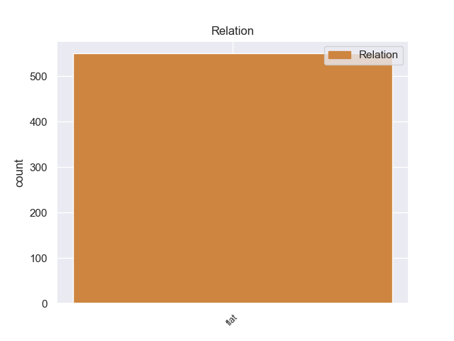
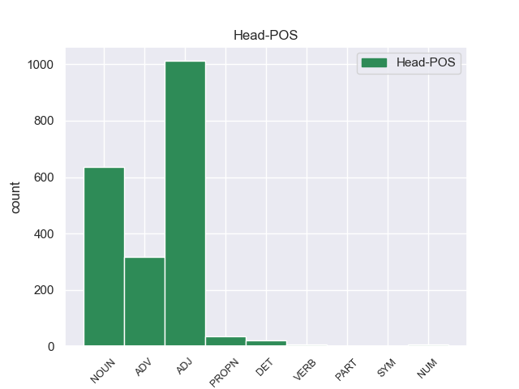
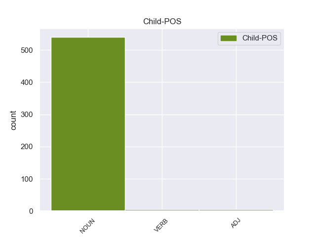

Distribution of features within this leaf



Morphosyntax Rules sorted by frequency.
- When the dependent token is the flat multiword expression(flat) of the head token, and the head token is NUM and the dependent token is NOUN, the Gender needs to be Masc.
1 И _ _ _ _ 0 _ _ _
2 напряжение _ _ _ _ 0 _ _ _
3 с _ _ _ _ 0 _ _ _
4 каждым _ _ _ _ 0 _ _ _
5 днем _ _ _ _ 0 _ _ _
6 нарастает _ _ _ _ 0 _ _ _
7 , _ _ _ _ 0 _ _ _
8 ибо _ _ _ _ 0 _ _ _
9 выдвижение _ _ _ _ 0 _ _ _
10 кандидатов _ _ _ _ 0 _ _ _
11 в _ _ _ _ 0 _ _ _
12 депутаты _ _ _ _ 0 _ _ _
13 по _ _ _ _ 0 _ _ _
14 избирательным _ _ _ _ 0 _ _ _
15 округам _ _ _ _ 0 _ _ _
16 будет _ _ _ _ 0 _ _ _
17 проходить _ _ _ _ 0 _ _ _
18 в _ _ _ _ 0 _ _ _
19 течение _ _ _ _ 0 _ _ _
20 всего _ _ _ _ 0 _ _ _
21 лишь _ _ _ _ 0 _ _ _
22 одного _ _ _ _ 0 _ _ _
23 месяца _ _ _ _ 0 _ _ _
24 - _ _ _ _ 0 _ _ _
25 с _ _ _ _ 0 _ _ _
26 26 _ _ _ _ 0 _ _ _
27 декабря _ _ _ _ 0 _ _ _
28 по _ _ _ _ 0 _ _ _
29 24 24 NUM _ _ 0 _ _ _
30 января январь NOUN _ Animacy=Inan|Case=Gen|Gender=Masc|Number=Sing 29 flat 29:flat SpaceAfter=No
31 . _ _ _ _ 0 _ _ _
1 Шел идти VERB _ Aspect=Imp|Gender=Masc|Mood=Ind|Number=Sing|Tense=Past|VerbForm=Fin|Voice=Act 0 _ _ _
2 - _ _ _ _ 0 _ _ _
3 шел идти VERB _ Aspect=Imp|Gender=Masc|Mood=Ind|Number=Sing|Tense=Past|VerbForm=Fin|Voice=Act 1 flat 1:flat _
4 и _ _ _ _ 0 _ _ _
5 дошел _ _ _ _ 0 _ _ _
6 до _ _ _ _ 0 _ _ _
7 набережной _ _ _ _ 0 _ _ _
8 . _ _ _ _ 0 _ _ _
1 Владислав _ _ _ _ 0 _ _ _
2 Рычков _ _ _ _ 0 _ _ _
3 , _ _ _ _ 0 _ _ _
4 директор _ _ _ _ 0 _ _ _
5 НПП _ _ _ _ 0 _ _ _
6 " _ _ _ _ 0 _ _ _
7 Рото Рото PROPN _ _ 0 _ _ _
8 клон клон NOUN _ Animacy=Inan|Case=Nom|Gender=Masc|Number=Sing 7 flat 7:flat SpaceAfter=No
9 " _ _ _ _ 0 _ _ _
10 : _ _ _ _ 0 _ _ _
1 Мы _ _ _ _ 0 _ _ _
2 отделаемся _ _ _ _ 0 _ _ _
3 сравнительно _ _ _ _ 0 _ _ _
4 легким _ _ _ _ 0 _ _ _
5 испугом _ _ _ _ 0 _ _ _
6 и _ _ _ _ 0 _ _ _
7 тем _ _ _ _ 0 _ _ _
8 , _ _ _ _ 0 _ _ _
9 что _ _ _ _ 0 _ _ _
10 наш _ _ _ _ 0 _ _ _
11 фондовый _ _ _ _ 0 _ _ _
12 рынок _ _ _ _ 0 _ _ _
13 примерно _ _ _ _ 0 _ _ _
14 пол _ _ _ _ 0 _ _ _
15 года год NOUN _ Animacy=Inan|Case=Gen|Gender=Masc|Number=Sing 0 _ _ _
16 - _ _ _ _ 0 _ _ _
17 год год NOUN _ Animacy=Inan|Case=Acc|Gender=Masc|Number=Sing 15 flat 15:flat _
18 будет _ _ _ _ 0 _ _ _
19 набирать _ _ _ _ 0 _ _ _
20 достигнутые _ _ _ _ 0 _ _ _
21 до _ _ _ _ 0 _ _ _
22 кризиса _ _ _ _ 0 _ _ _
23 значения _ _ _ _ 0 _ _ _
24 биржевых _ _ _ _ 0 _ _ _
25 индексов _ _ _ _ 0 _ _ _
26 . _ _ _ _ 0 _ _ _
1 Тогда _ _ _ _ 0 _ _ _
2 старый старый ADJ _ Case=Nom|Degree=Pos|Gender=Masc|Number=Sing 0 _ _ _
3 - _ _ _ _ 0 _ _ _
4 старый старый ADJ _ Case=Nom|Degree=Pos|Gender=Masc|Number=Sing 2 flat 2:flat _
5 дедка _ _ _ _ 0 _ _ _
6 кряхтел _ _ _ _ 0 _ _ _
7 - _ _ _ _ 0 _ _ _
8 кряхтел _ _ _ _ 0 _ _ _
9 на _ _ _ _ 0 _ _ _
10 печи _ _ _ _ 0 _ _ _
11 да _ _ _ _ 0 _ _ _
12 не _ _ _ _ 0 _ _ _
13 выдержал _ _ _ _ 0 _ _ _
14 , _ _ _ _ 0 _ _ _
15 слез _ _ _ _ 0 _ _ _
16 оттуда _ _ _ _ 0 _ _ _
17 . _ _ _ _ 0 _ _ _
non-conforming Examples:
1 Это _ _ _ _ 0 _ _ _
2 другой _ _ _ _ 0 _ _ _
3 вопрос _ _ _ _ 0 _ _ _
4 : _ _ _ _ 0 _ _ _
5 демагогия демагогия NOUN _ Animacy=Inan|Case=Nom|Gender=Fem|Number=Sing 0 _ _ _
6 - _ _ _ _ 0 _ _ _
7 не _ _ _ _ 0 _ _ _
8 демагогия демагогия NOUN _ Animacy=Inan|Case=Nom|Gender=Fem|Number=Sing 5 flat 5:flat SpaceAfter=No
9 . _ _ _ _ 0 _ _ _
1 - _ _ _ _ 0 _ _ _
2 Ох _ _ _ _ 0 _ _ _
3 , _ _ _ _ 0 _ _ _
4 ребята ребята NOUN _ Animacy=Anim|Case=Nom|Gender=Neut|Number=Plur 0 _ _ _
5 , _ _ _ _ 0 _ _ _
6 ребята ребята NOUN _ Animacy=Anim|Case=Nom|Gender=Neut|Number=Plur 4 flat 4:flat SpaceAfter=No
7 . _ _ _ _ 0 _ _ _
1 Дурачье дурачье NOUN _ Animacy=Inan|Case=Nom|Gender=Neut|Number=Sing 0 _ _ _
2 , _ _ _ _ 0 _ _ _
3 дурачье дурачье NOUN _ Animacy=Inan|Case=Nom|Gender=Neut|Number=Sing 1 flat 1:flat SpaceAfter=No
4 . _ _ _ _ 0 _ _ _
1 А _ _ _ _ 0 _ _ _
2 всего _ _ _ _ 0 _ _ _
3 по _ _ _ _ 0 _ _ _
4 стране _ _ _ _ 0 _ _ _
5 - _ _ _ _ 0 _ _ _
6 80 _ _ _ _ 0 _ _ _
7 соединений _ _ _ _ 0 _ _ _
8 и _ _ _ _ 0 _ _ _
9 воинских _ _ _ _ 0 _ _ _
10 частей _ _ _ _ 0 _ _ _
11 ( _ _ _ _ 0 _ _ _
12 из _ _ _ _ 0 _ _ _
13 них _ _ _ _ 0 _ _ _
14 72 _ _ _ _ 0 _ _ _
15 в _ _ _ _ 0 _ _ _
16 структуре _ _ _ _ 0 _ _ _
17 Министерства _ _ _ _ 0 _ _ _
18 обороны _ _ _ _ 0 _ _ _
19 , _ _ _ _ 0 _ _ _
20 3 3 NUM _ _ 0 _ _ _
21 в _ _ _ _ 0 _ _ _
22 пограничных _ _ _ _ 0 _ _ _
23 войсках войска NOUN _ Animacy=Inan|Case=Loc|Gender=Neut|Number=Plur 20 flat 20:flat _
24 и _ _ _ _ 0 _ _ _
25 5 _ _ _ _ 0 _ _ _
26 во _ _ _ _ 0 _ _ _
27 внутренних _ _ _ _ 0 _ _ _
28 войсках _ _ _ _ 0 _ _ _
29 ) _ _ _ _ 0 _ _ _
30 . _ _ _ _ 0 _ _ _
1 А _ _ _ _ 0 _ _ _
2 всего _ _ _ _ 0 _ _ _
3 по _ _ _ _ 0 _ _ _
4 стране _ _ _ _ 0 _ _ _
5 - _ _ _ _ 0 _ _ _
6 80 _ _ _ _ 0 _ _ _
7 соединений _ _ _ _ 0 _ _ _
8 и _ _ _ _ 0 _ _ _
9 воинских _ _ _ _ 0 _ _ _
10 частей _ _ _ _ 0 _ _ _
11 ( _ _ _ _ 0 _ _ _
12 из _ _ _ _ 0 _ _ _
13 них _ _ _ _ 0 _ _ _
14 72 _ _ _ _ 0 _ _ _
15 в _ _ _ _ 0 _ _ _
16 структуре _ _ _ _ 0 _ _ _
17 Министерства _ _ _ _ 0 _ _ _
18 обороны _ _ _ _ 0 _ _ _
19 , _ _ _ _ 0 _ _ _
20 3 _ _ _ _ 0 _ _ _
21 в _ _ _ _ 0 _ _ _
22 пограничных _ _ _ _ 0 _ _ _
23 войсках _ _ _ _ 0 _ _ _
24 и _ _ _ _ 0 _ _ _
25 5 5 NUM _ _ 0 _ _ _
26 во _ _ _ _ 0 _ _ _
27 внутренних _ _ _ _ 0 _ _ _
28 войсках войска NOUN _ Animacy=Inan|Case=Loc|Gender=Neut|Number=Plur 25 flat 25:flat SpaceAfter=No
29 ) _ _ _ _ 0 _ _ _
30 . _ _ _ _ 0 _ _ _